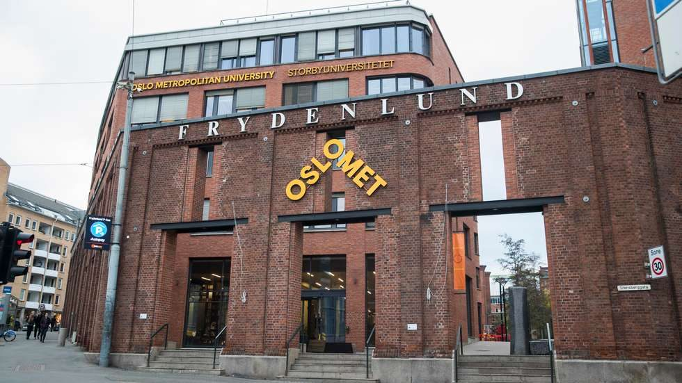

Lab
Information about the lab
Mørk Lab, Living Dynamics Lab
01 Work
Projects
Hi! This is Gustavo. I am a former Neuroscientist, psychologist and graphic designer. Now I use computational methods to better understand how biological and psychological processes may give rise to intelligent behaviors. My main focus is on biologically plausible algorithms for causal inference, associative learning and sense of agency.
Positions
No open positions are listed at the moment.
02 People
Members
Current members will be listed here.
Alumni
- Samip
- Nayan
- Pernille